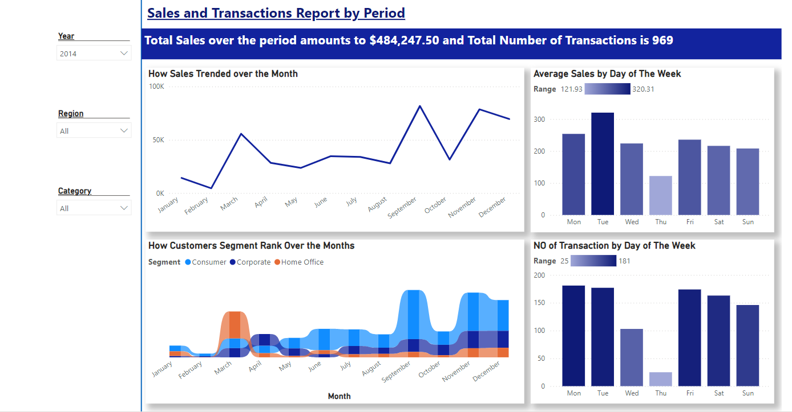
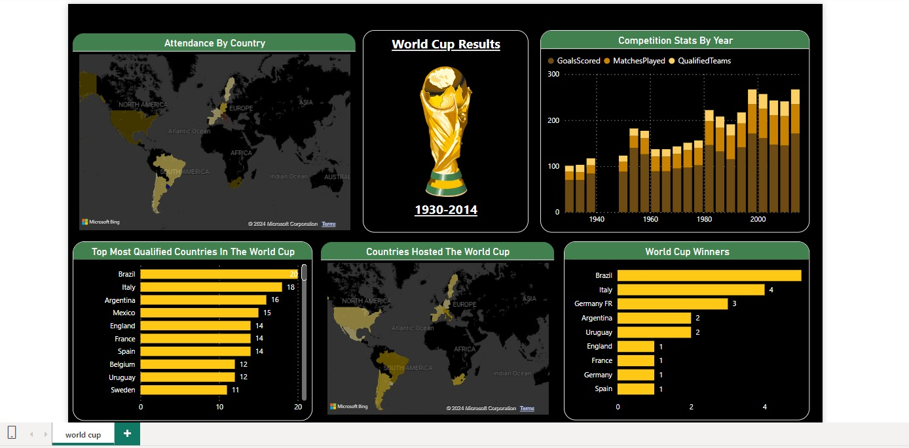
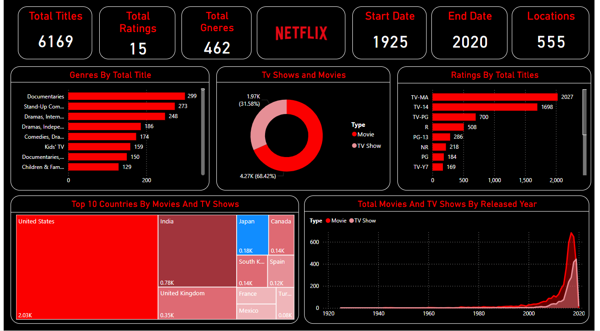

I am a passionate data analyst with a background in transforming complex datasets into actionable insights.
With hands-on experience using tools like Power BI, Excel and SQL, I specialize in building data-driven
solutions that help businesses make informed decisions.
I’ve worked on a variety of projects, including analyzing Netflix and Prime Video datasets to visualize streaming trends,
building sales dashboards for businesses to optimize revenue, and breaking down historical World Cup data to highlight key performance insights.
My goal is to turn raw data into meaningful stories through interactive visualizations
I am continually developing my skills through platforms like Kaggle, where I engage with real-world data challenges, and I stay updated with the latest trends in data analytics.
Whether it's uncovering hidden patterns in sales data or forecasting customer behavior,
I’m always excited to explore new ways to leverage data for impactful solutions.

A Power BI sales and transaction dashboard featuring visualizations of sales trends over the month, highlighting fluctuations in revenue. Created a chart showing the average sales by day of the week to identify peak sales periods,
and analyzed the number of transactions by day of the week to optimize staffing and inventory decisions. The dashboard provided actionable insights for improving sales performance and operational efficiency.

Designed and managed a comprehensive Excel dashboard to analyze coffee sales data,
tracking key metrics such as total sales over time, sales by country, and top 5 customers.
Leveraged advanced Excel functions, pivot tables, and charts to provide actionable insights
and improve business decision-making for sales strategy and inventory management.

Created a dynamic visualization with POWERBI to analyze key data points such as countries that qualified, winning teams, host countries, competition trends and attendance by Countries.
Transformed and processed data by using Excel to ensure data completeness and validity.
Provide a comprehensive view of world cup historical data, from the number of participant countries to the host nations and winning teams.

Designed a comprehensive Power BI dashboard for Prime Video, showcasing key KPIs including total titles, total ratings, total genres, and total directors. Visualized the ratings distribution
of all shows and analyzed the total number of shows by country. This dashboard provided valuable insights into Prime Video's content library, helping to
assess viewer preferences and content diversity across markets.

Developed a Power BI dashboard for Netflix, displaying key KPIs such as total titles, total ratings, and total genres. Visualized the ratings distribution of all TV
shows and analyzed the overall ratings across the platform to assess viewer engagement and content performance. This dashboard provided actionable insights into Netflix’s
content catalog, helping to identify top-performing genres and high-rated shows.